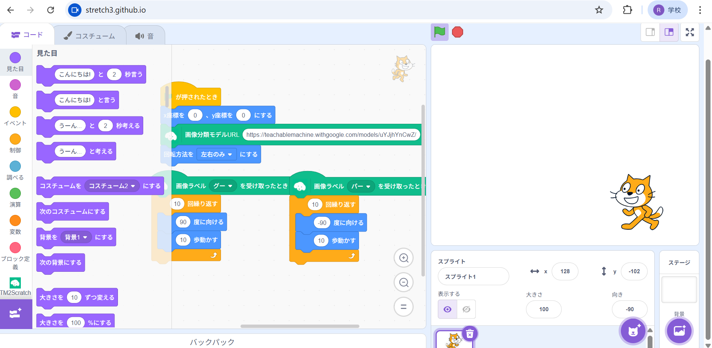
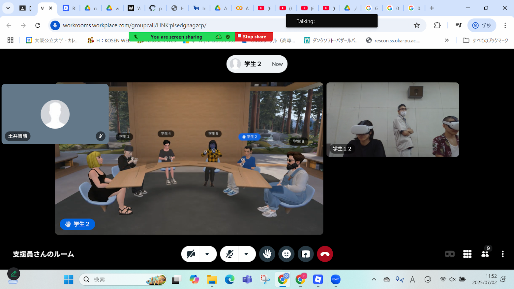
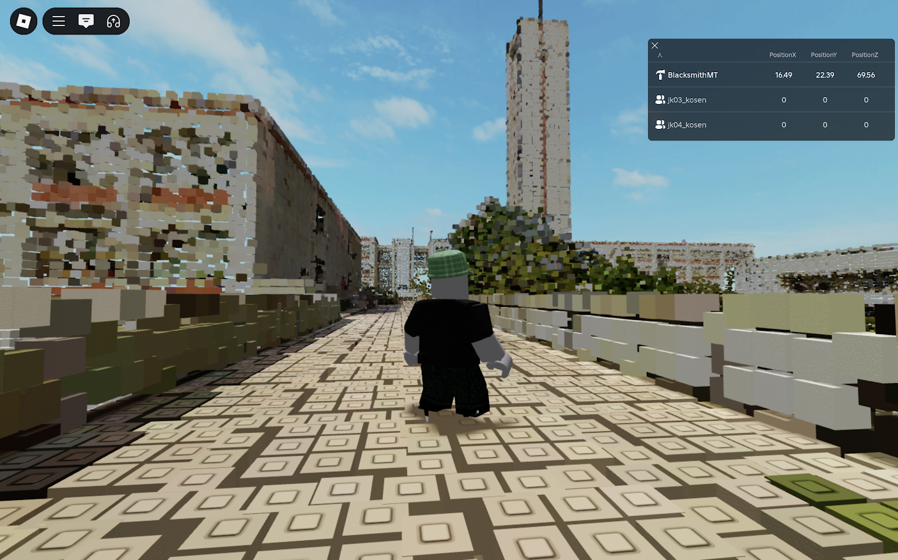

第2週目
2-1 2週目のレポートをHTMLで作る
1.内容
生成AIについて学んだ。
Teachable Machineというサイトを通して、機械学習について学んだ。
roblox,wrなどでVR体験をした。
2.感想
AIに対しての理解が深まった。また、このAIを通すことによって、
特定の操作に対して回答を出させることが簡単になるという事が分かった。
3. 2週目が完成した人は1週目のレポートも完成させる
2-2 機械学習体験

1.内容
TeachableMachineというサイトを用いて機械学習のやり方を学んだ。
また、このサイトで作った成果物をscratch(streatch3)に入れて応用した。
2.感想
TeachableMachineで作ったモデルは自分の予想よりも完成度が高かったが、
まだまだ判別の仕方などの工夫のし甲斐がありそうだなと思った。
2-3 VR（バーチャルリアリティー：Virtual Reality）の体験
 
1.内容
Meta社のWorkrooms,Roblox社のRobloxを用いてVR体験をした。
VR体験における基本的な操作やバーチャル空間について学ぶことができた。
2.感想
バーチャル空間の中にいるととても高い没入感を感じた。
また、現実と仮想空間上の区別があまりつかなくなるのが少し不思議な感じがした。